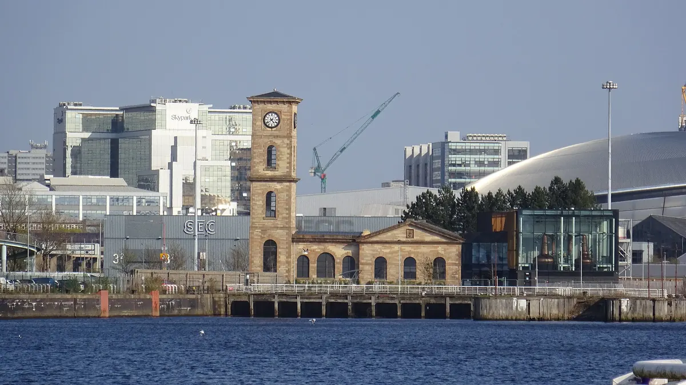
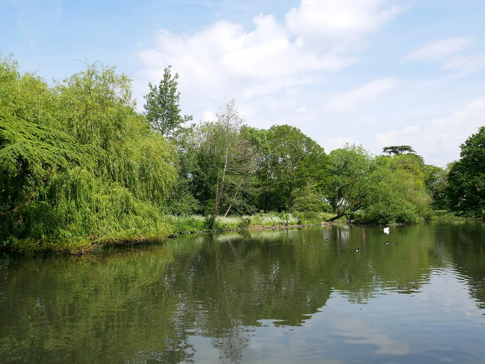
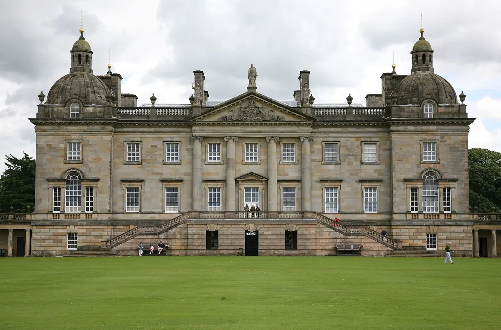
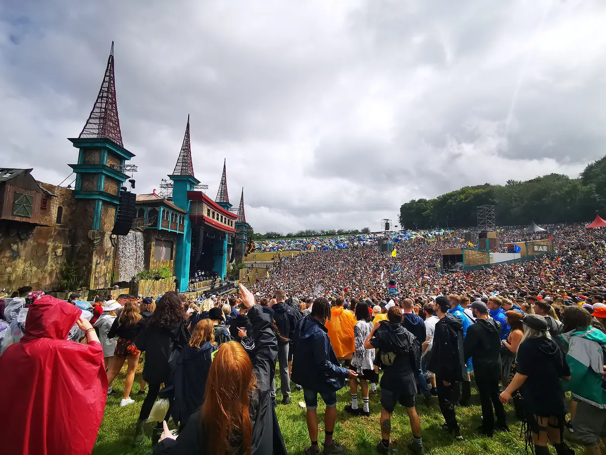
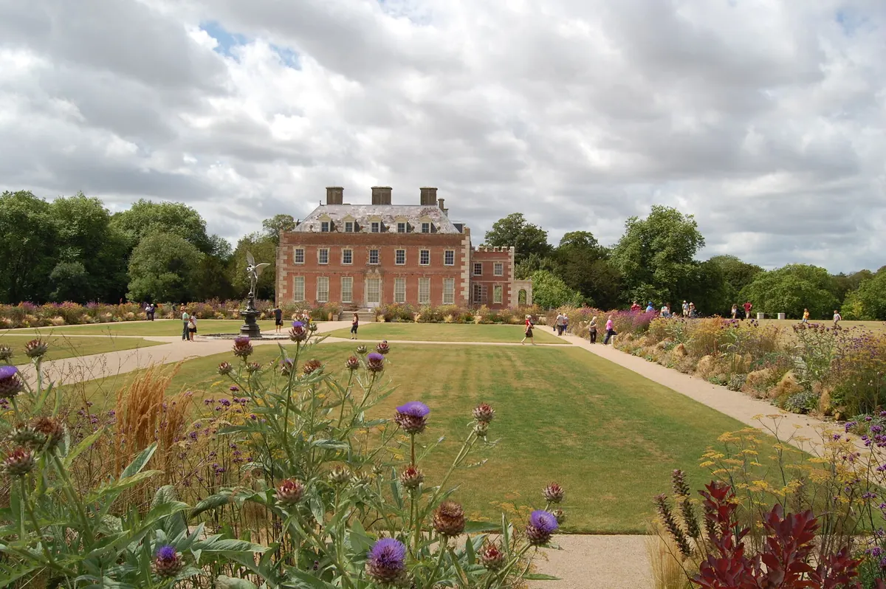
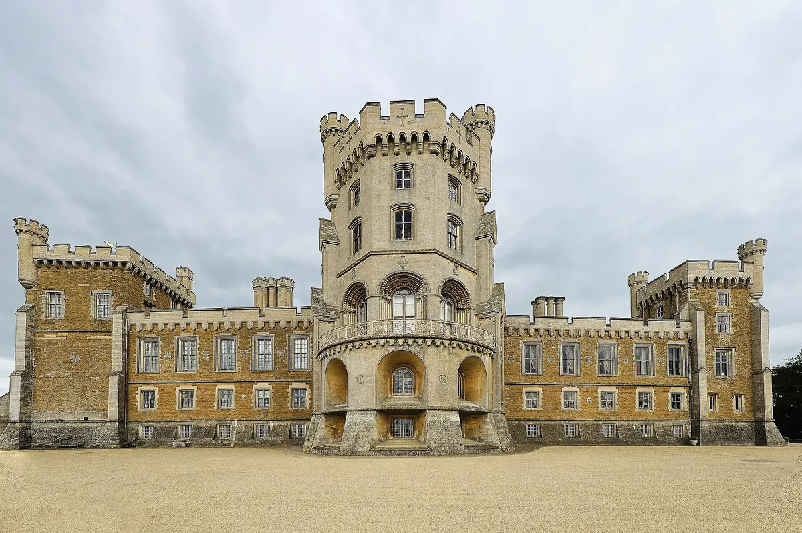
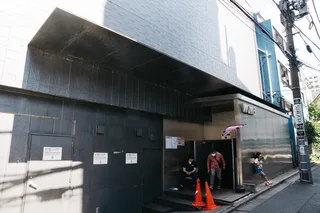
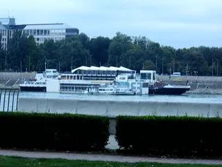

Festival guide, 2027
The best dance music festivals in the UK in 2027
UK dance festivals compared by sound, size and setting, from Creamfields to a wood in Lincolnshire, with the 2027 dates that are confirmed and the ones that are only reported.
A list meant for choosing.
The UK season runs from late May to the August bank holiday, and the last weekend of August is the busiest of all. Creamfields leads on scale and Houghton on sound, and Parklife, Boomtown and Lost Village cover everything in between. This page compares the best dance music festivals UK-wide, by sound, size and setting, and shows which 2027 dates are confirmed.
How this list was chosen.
A festival is on this list when these three things are true:
- Dance music is the core of the programme, or a very large part of it.
- It has run in the UK recently, and it has either published a 2027 edition or given no sign of stopping.
- It adds something the others lack: a different sound, a different place or a different size.
DJ Mag's Top 100 Festivals for 2026, a reader poll, is used as a rough guide to profile. Creamfields is seventh, Parklife 13th, Boomtown 20th, Terminal V 22nd, Houghton 43rd and Lost Village 66th. Smaller festivals can pass the tests without being in the poll.
A date from the festival's own site is shown as confirmed. A date found only on a ticketing page or in press reports is marked as reported.
UK dance festival dates for 2027 at a glance.
One clash is worth knowing about: Creamfields and Lost Village share 26 to 29 August, the bank holiday weekend. Houghton and Boomtown fall in consecutive weeks of August, so you can do both if you have the stamina.
| Festival | Where | 2027 dates | Sound | Scale | Best for |
|---|---|---|---|---|---|
| Forbidden Forest | Belvoir Castle, Leicestershire | 28 to 30 May | Dance music | Three days | An early start to the season |
| Terminal V | Glasgow, Scotland | 4 to 6 June | Techno | Three days, outdoors | Techno in Scotland |
| Gottwood | Anglesey, Wales | Reported 10 to 13 June | House, techno | About 5,000 | A small island trip |
| Glastonbury | Pilton, Somerset | 23 to 27 June | All genres | Not a dance festival | Late-night areas |
| Parklife | Heaton Park, Manchester | 10 to 11 July | Dance, pop, hip-hop | Two days | A city weekend |
| Junction 2 | Boston Manor Park, London | Summer, dates not announced | Techno | Not announced | Techno in London |
| Houghton | Houghton Hall, Norfolk | 5 to 8 August | House, techno, dub, jazz, ambient | About 10,000 reported | The selectors |
| Boomtown | Matterley Estate, Hampshire | 11 to 15 August | Techno, house, dub, reggae, ska | About 77,000 limit | A rave city |
| We Out Here | Wimborne St Giles, Dorset | 19 to 22 August | Soul, hip-hop, house, jazz | Reported cap of 25,000 | Open ears |
| Creamfields | Daresbury, Cheshire | 26 to 29 August | EDM, house, techno | 80,000 | The biggest crowd |
| Lost Village | Swinderby, Lincolnshire | 26 to 29 August | House, techno | Up to 15,000 reported | A weekend in a wood |
Which are the best techno festivals in the UK?
Terminal V in Glasgow and Junction 2 in London are the best techno festivals in the UK. For techno festivals UK listeners can fly to, see the best techno festivals in the world.
Terminal V, Glasgow
Terminal V is moving from Edinburgh to the Glasgow docklands for its 10th anniversary. The first three-day edition, and the first fully outdoor one in Scotland, is on 4 to 6 June 2027 at Clydeside Live on the north bank of the Clyde, with Area V as the main stage at the water's edge, plus The Hangar and The Greenhouse. It ranks 22nd in DJ Mag's list.

It began as a 2,000-capacity, one-day event at the Royal Highland Centre in Edinburgh, and it now reports more than 20,000 people a day. In 2020 it ran Connect, a streaming series. This set is Alan Fitzpatrick's for Connect, filmed with Beatport.
Junction 2, London
Junction 2 is at Boston Manor Park in west London, known for its stage under the elevated M4 motorway, which the festival calls The Bridge. It returns in summer 2027, and the exact dates have not been announced.

Which are the best house music festivals in the UK?
Houghton, Parklife and Creamfields are the three house music festivals UK listeners should start with, and they are three different sizes.
Houghton, Norfolk
Houghton has been held in the grounds of Houghton Hall in Norfolk since 2017, and it is curated by Craig Richards. It publishes no capacity, and reports put it at about 10,000. It covers house, techno, dub, jazz and ambient, and music runs around the clock. The 2027 edition is on 5 to 8 August. It suits people who care most about the selectors.

Parklife, Manchester
Parklife is a two-day city festival at Heaton Park in Manchester, on 10 and 11 July 2027. It ranks 13th in DJ Mag's list. It mixes dance acts with pop and hip-hop, and you sleep at home or in a city hotel.
Creamfields, Cheshire
Creamfields is the biggest dance music festival UK-wide, with a capacity of 80,000 and about 55,000 camping on site. It started in 1998 as a day out from Cream, the Liverpool house night. The 2027 edition is on 26 to 29 August at its long-time home of Daresbury, and the festival is billing it as 30 years of Creamfields. See the Creamfields guide.
This Creamfields set was filmed by DJ Mag in 2021.
Where can you find a rave festival in the UK?
For a rave festival UK crowds travel to, start with Boomtown in Hampshire. Glastonbury has a rave side of its own. Both go wider than dance music.
Boomtown, Hampshire
Boomtown Chapter Six is on 11 to 15 August 2027 at Matterley Estate near Winchester.

It is built as a temporary city, with street sets, actors and hidden venues, and its music runs across techno, house, dub, reggae, ska and punk. It ranks 20th in DJ Mag's list. See the Boomtown guide. This is Carl Cox on Boomtown's Nucleus stage in 2019, from the festival's own channel.
Glastonbury, Somerset
Glastonbury is on 23 to 27 June 2027 at Worthy Farm. It is not a dance festival, but Arcadia and its other late-night areas give it a rave of its own. See the Glastonbury guide.
Small dance festivals in the UK.
Small dance festivals UK-wide tend to sell out early and to book more carefully than the big ones. These are the ones to look at first.
Lost Village, Lincolnshire
Lost Village began in 2015 and is held near Swinderby in Lincolnshire, in a wood dressed as an abandoned settlement. It publishes no attendance, and reports put it at up to 15,000. It is for ages 18 and over. The 2027 edition is on 26 to 29 August, and the 2026 edition sold out. It ranks 66th in DJ Mag's list.
We Out Here, Dorset
We Out Here is on 19 to 22 August 2027 at Wimborne St Giles in Dorset, and it is curated by Gilles Peterson. Its programme runs through soul, hip-hop, house, afrobeat, electronica and jazz, which makes it the most musically open festival here. It is also the largest in this section, with a reported cap of 25,000.

Forbidden Forest, Leicestershire
Forbidden Forest is on 28 to 30 May 2027 at Belvoir Castle, near Grantham, over the late May bank holiday, which makes it one of the first dance weekends of the UK season. It is for over-18s, and the Friday is open to camping ticket holders only.

Gottwood, Anglesey
Gottwood is reported for 10 to 13 June 2027 at the Carreglwyd Estate on Anglesey in north Wales. It is capped at about 5,000, and its 2026 edition ran around the clock. The island setting makes it a long trip for most people.
Not on this list, and why.
- The Warehouse Project. It has run in Manchester since 2006, now at Depot Mayfield, but it is a club season, not a festival.
- Hideout. It is reported for 29 June to 2 July 2027, but it takes place in Croatia.
For more European choices, see the best electronic music festivals in Europe.
How to choose.
Start with size. Creamfields has the biggest crowd and headliners, Parklife is the city weekend, and Boomtown is a place to get lost in. For careful programming and a smaller crowd, pick Houghton or Lost Village. We Out Here has the widest range of music.
Then check the calendar. Lost Village sold out in 2026, and the bank holiday clash means you have to choose between Creamfields and Lost Village.
Gottwood's date is still only reported and Junction 2 has not named its weekend, so wait for both before you book travel.
UK dance festivals FAQ.
What are the biggest dance festivals in the UK?
Creamfields is the biggest, with a capacity of 80,000. Boomtown has an approved limit of about 77,000, a ceiling that includes crew and staff categories, not an attendance figure. Parklife is the other big one, and those three are the highest-placed dance festivals England has in DJ Mag's list.
Are there techno festivals in the UK?
Yes. Terminal V is on 4 to 6 June 2027 in Glasgow, and Junction 2 returns to Boston Manor Park in London in summer 2027. Houghton, Gottwood and Boomtown also programme a lot of techno.
What are the best small dance festivals in the UK?
Gottwood on Anglesey, capped at about 5,000, and Lost Village in Lincolnshire are the two to look at first, with Forbidden Forest in Leicestershire behind them. We Out Here in Dorset is bigger, with a reported cap of 25,000.
Sources.
- 2027 dates from each festival's own site: Terminal V, Forbidden Forest, Parklife, Houghton, Lost Village, We Out Here, Junction 2.
- Reported dates: Visit Wales and Technoairlines (Gottwood), Technoairlines (Hideout).
- Terminal V stages and setting: Skiddle and Time Out, 29 September 2026.
- Capacity reports: festivalcalendar.uk (Houghton, Lost Village), The Lincolnite (Lost Village), Dorset Council licensing papers (We Out Here), Mixmag (Gottwood).
- Poll ranks: DJ Mag: Top 100 Festivals 2026.
- Creamfields, Boomtown and Glastonbury: this site's guide to each festival, linked above, which cites its own sources.
Continue reading
Read next.
 Rave spots~8 min read
Rave spots~8 min readBerghain: Panorama Bar, Sound and Residents
Berghain explained: the former power station, Panorama Bar upstairs, Halle am Berghain, the Kantine, and the Ostgut Ton label.
Read article → Rave spots~11 min read
Rave spots~11 min readBest Clubs in NYC: Nightclubs for House and Techno
Nowadays, Basement, Public Records, Good Room and Elsewhere: the best clubs in NYC for house and techno now, and the history from the Loft to Output.
Read article →
Rave spots~7 min readBest Clubs in Tokyo: WOMB, Contact and the Ban on Dancing
WOMB, Contact, Vent and Circus Tokyo: the best clubs in Tokyo for house, techno and bass music, and the 68-year law against dancing that shaped them.
Read article →
Rave spots~6 min readBest Clubs in Budapest: A38, Instant-Fogas and Turbina
A38's converted cargo ship, the seven rooms of Instant-Fogas and Turbina's techno nights: the best clubs in Budapest now, and the ruin bars several grew out of.
Read article →